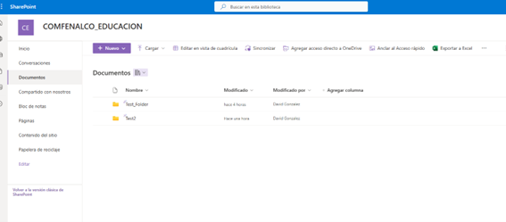
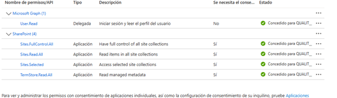

Sharepoint (Configuración y Estructura)¶
Introducción¶
La integración de SharePoint con los procesos ETL (Extract, Transform, Load) garantiza una gestión centralizada, accesible y segura de los datos capturados mediante técnicas avanzadas de webscraping. Este enfoque permite organizar, almacenar y compartir información académica y administrativa de manera eficiente, asegurando que los equipos involucrados puedan acceder a datos actualizados y estructurados.
En el ámbito de la Educación Técnica y Continua, SharePoint se convierte en una herramienta clave para el manejo de los datos procesados, facilitando la colaboración entre múltiples actores y plataformas. La implementación de una estructura bien definida de carpetas y permisos asegura que los flujos de trabajo sean consistentes y escalables.
Principales Características de la Configuración¶
- Creación del Sitio del Proyecto: El sitio COMFENALCO_EDUCACION actúa como el repositorio principal de los datos extraídos, procesados y consolidados.
-
Estructuración de Carpetas:
- Las carpetas están organizadas en niveles jerárquicos, categorizando los datos según su origen y propósito.
- Subcarpetas específicas almacenan datos procesados y sin procesar, lo que permite un control preciso de las versiones y una fácil recuperación de información.
-
Autenticación Segura mediante Azure:
- Registro de una aplicación en Azure para la autenticación de SharePoint.
- Uso de un cliente secreto y certificados para garantizar un acceso seguro a los datos.
-
Gestión de Permisos:
- Configuración de permisos específicos para aplicaciones como
Sites.FullControl.AllyTermStore.Read.All. - Garantía de que solo usuarios autorizados puedan acceder y modificar la información almacenada.
- Configuración de permisos específicos para aplicaciones como
-
Automatización con Python:
- El código
SharePoint_Connection.pypermite interactuar directamente con las carpetas y archivos de SharePoint, automatizando procesos como la carga y extracción de datos.
- El código
Metodología para Configuración Sharepoint Online para Web Scrapping y SSIS¶
- Crear en SharePoint el sitio del proyecto (
COMFENALCO_EDUCACION) -
En la parte de documentos crear las carpetas necesarias

-
En
Azureir aRegistro de Aplicaciones - Crear una nueva aplicación.
- Asignarle un cliente secreto y copiar y guardar el
secret_clientque se genera. Solo se puede ver en este momento. -
Subir un certificado. En la carpeta donde se vaya a crear la ETL de Web Scraping correr el siguiente comando y subir el archivo generado.
Observaciones
- Puede ser necesario instalar
OpenSSLen Windows. Guía para instalarhttps://www.youtube.com/watch?v=coaGBdUcKiw - Se puede tomar como referencia el siguiente video
https://www.youtube.com/watch?v=KWKiwpK-L5o
- Puede ser necesario instalar
-
Luego ir a
Permisos de APIy agregar un nuevo permiso. Buscar la aplicaciónSharePointy escoger permisos de aplicaciónSites.FullControl.All,Real.All,TermStore.Read.all - Conceder el permiso del paso anterior. Para este paso se requieren permisos de administrador en la consola de Azure.
- Con esto el código de
SharePoint_Connection.pydebe funcionar. Tener cuidado de la carpeta a la cual se está dirigiendo en la variablefolder_url
Estructura de la Carpeta¶
COMFENALCO EDUCACION¶
01.Q10
- Docentes_08_12_2024.xlsx
- Docentes_09_12_2024.xlsx
- Docentes_20_11_2024.xlsx
- Docentes_21_11_2024.xlsx
- Docentes_23_11_2024.xlsx
- Docentes_23_12_2024.xlsx
- Docentes_27_12_2024.xlsx
- Diseño_Curricular_08_12_2024.xlsx
- Diseño_Curricular_17_12_2024.xlsx
- Diseño_Curricular_20_11_2024.xlsx
- Diseño_Curricular_21_11_2024.xlsx
- Diseño_Curricular_27_12_2024.xlsx
- Listado_Matriculas_01_01_2016_31_12_2016_Act_23_12_2024.xlsx
- Listado_Matriculas_01_01_2016_31_12_2016_Act_24_11_2024.xlsx
- Listado_Matriculas_01_01_2017_31_12_2017_Act_23_12_2024.xlsx
- Listado_Matriculas_01_01_2017_31_12_2017_Act_24_11_2024.xlsx
- Listado_Matriculas_01_01_2017_31_12_2017_Act_24_11_20241.xlsx
- Listado_Matriculas_01_01_2018_31_12_2018_Act_23_12_2024.xlsx
- Listado_Matriculas_01_01_2018_31_12_2018_Act_24_11_2024.xlsx
- Listado_Matriculas_01_01_2019_31_12_2019_Act_23_12_2024.xlsx
- Listado_Matriculas_01_01_2020_31_12_2020_Act_23_12_2024.xlsx
- Listado_Matriculas_01_01_2021_31_12_2021_Act_23_12_2024.xlsx
- Listado_Matriculas_01_01_2022_31_12_2022_Act_23_12_2024.xlsx
- Listado_Matriculas_01_01_2023_31_12_2023_Act_23_12_2024.xlsx
- Listado_Matriculas_01_01_2024_28_11_2024_Act_28_11_2024.xlsx
- Listado_Matriculas_01_01_2024_30_06_2024_Act_27_12_2024.xlsx
- Listado_Matriculas_01_01_2024_31_12_2024_Act_23_12_2024.xlsx
- Listado_Matriculas_01_01_2024_31_12_2024_Act_27_12_2024.xlsx
- Ingresos_01_01_2017_31_12_2017_23_12_2024.xlsx
- Ingresos_01_01_2018_31_12_2018_23_12_2024.xlsx
- Ingresos_01_01_2019_31_12_2019_23_12_2024.xlsx
- Ingresos_01_01_2020_31_12_2020_23_12_2024.xlsx
- Ingresos_01_01_2020_31_12_2020_27_12_2024.xlsx
- Ingresos_01_01_2021_31_12_2021_23_12_2024.xlsx
- Ingresos_01_01_2022_31_12_2022_23_12_2024.xlsx
- Ingresos_01_01_2023_31_12_2023_23_12_2024.xlsx
- Ingresos_01_01_2024_31_12_2024_23_12_2024.xlsx
- - Historico_Notas_2023_2_0100c7e4_24_12_2024.xlsx
- - Historico_Notas_2023_2_026fa7c8_24_12_2024.xlsx
- - Historico_Notas_2023_2_02cbe285_24_12_2024.xlsx
- - Historico_Notas_2023_2_0449a5e7_24_12_2024.xlsx
- - Historico_Notas_2023_2_07dba647_24_12_2024.xlsx
- - Historico_Notas_2023_2_092aac38_24_12_2024.xlsx
- - Historico_Notas_2023_2_0cddad19_24_12_2024.xlsx
- - Historico_Notas_2023_2_0dff50cb_24_12_2024.xlsx
- - Historico_Notas_2023_2_0e7858c3_24_12_2024.xlsx
- - Historico_Notas_2023_2_10375576_24_12_2024.xlsx
- - Historico_Notas_2023_2_109d6949_24_12_2024.xlsx
- - Historico_Notas_2023_2_121fad89_24_12_2024.xlsx
- - Historico_Notas_2023_2_12dc19a4_24_12_2024.xlsx
- - Historico_Notas_2023_2_1735f955_24_12_2024.xlsx
- - Historico_Notas_2023_2_185ac97e_24_12_2024.xlsx
- - Historico_Notas_2023_2_1958d0f8_24_12_2024.xlsx
- - Historico_Notas_2023_2_1a220917_24_12_2024.xlsx
- - Historico_Notas_2023_2_2210ee55_24_12_2024.xlsx
- - Historico_Notas_2023_2_2226d5a5_24_12_2024.xlsx
- - Historico_Notas_2023_2_2380e5e7_24_12_2024.xlsx
- - Historico_Notas_2023_2_24b41186_24_12_2024.xlsx
- - Historico_Notas_2023_2_273540de_24_12_2024.xlsx
- - Historico_Notas_2023_2_29769f40_24_12_2024.xlsx
- - Historico_Notas_2023_2_2be84da8_24_12_2024.xlsx
- - Historico_Notas_2023_2_2d29660f_24_12_2024.xlsx
- - Historico_Notas_2023_2_2e068ad5_24_12_2024.xlsx
- - Historico_Notas_2023_2_2ee8230e_24_12_2024.xlsx
- - Historico_Notas_2023_2_306b3846_24_12_2024.xlsx
- - Historico_Notas_2023_2_30cc8d74_24_12_2024.xlsx
- - Historico_Notas_2023_2_32e309f0_24_12_2024.xlsx
- - Historico_Notas_2023_2_33b9edfc_24_12_2024.xlsx
- - Historico_Notas_2023_2_378b0fac_24_12_2024.xlsx
- - Historico_Notas_2023_2_384c0f48_24_12_2024.xlsx
- - Historico_Notas_2023_2_4215b767_24_12_2024.xlsx
- - Historico_Notas_2023_2_46b79fc3_24_12_2024.xlsx
- - Historico_Notas_2023_2_4921f516_24_12_2024.xlsx
- - Historico_Notas_2023_2_4bad2c64_24_12_2024.xlsx
- - Historico_Notas_2023_2_4d3cc959_24_12_2024.xlsx
- - Historico_Notas_2023_2_4dc601e8_24_12_2024.xlsx
- - Historico_Notas_2023_2_541f1898_24_12_2024.xlsx
- - Historico_Notas_2023_2_55a3bd93_24_12_2024.xlsx
- - Historico_Notas_2023_2_55e6763f_24_12_2024.xlsx
- - Historico_Notas_2023_2_58f870e4_24_12_2024.xlsx
- - Historico_Notas_2023_2_5f5f368b_24_12_2024.xlsx
- - Historico_Notas_2023_2_62908c57_24_12_2024.xlsx
- - Historico_Notas_2023_2_6500f569_24_12_2024.xlsx
- - Historico_Notas_2023_2_6540bc55_24_12_2024.xlsx
- - Historico_Notas_2023_2_66b59284_24_12_2024.xlsx
- - Historico_Notas_2023_2_68bb266b_24_12_2024.xlsx
- - Historico_Notas_2023_2_6b58a8a9_24_12_2024.xlsx
- - Historico_Notas_2023_2_6ef0249a_24_12_2024.xlsx
- - Historico_Notas_2023_2_6f559dd2_24_12_2024.xlsx
- - Historico_Notas_2023_2_73887911_24_12_2024.xlsx
- - Historico_Notas_2023_2_7a4650f1_24_12_2024.xlsx
- - Historico_Notas_2023_2_7a962879_24_12_2024.xlsx
- - Historico_Notas_2023_2_7c26c9fe_24_12_2024.xlsx
- - Historico_Notas_2023_2_7e5281f2_24_12_2024.xlsx
- - Historico_Notas_2023_2_7eaa6bf3_24_12_2024.xlsx
- - Historico_Notas_2023_2_7ecf3546_24_12_2024.xlsx
- - Historico_Notas_2023_2_81280bf5_24_12_2024.xlsx
- - Historico_Notas_2023_2_812e8d89_24_12_2024.xlsx
- - Historico_Notas_2023_2_85fd6ce5_24_12_2024.xlsx
- - Historico_Notas_2023_2_885e0511_24_12_2024.xlsx
- - Historico_Notas_2023_2_88851305_24_12_2024.xlsx
- - Historico_Notas_2023_2_8a1dc0e8_24_12_2024.xlsx
- - Historico_Notas_2023_2_8ead704b_24_12_2024.xlsx
- - Historico_Notas_2023_2_8fd27aa1_24_12_2024.xlsx
- - Historico_Notas_2023_2_91cb763c_24_12_2024.xlsx
- - Historico_Notas_2023_2_956755ea_24_12_2024.xlsx
- - Historico_Notas_2023_2_9776db00_24_12_2024.xlsx
- - Historico_Notas_2023_2_9a88ca6d_24_12_2024.xlsx
- - Historico_Notas_2023_2_a8543b8f_24_12_2024.xlsx
- - Historico_Notas_2023_2_a895cfc3_24_12_2024.xlsx
- - Historico_Notas_2023_2_ab2d75de_24_12_2024.xlsx
- - Historico_Notas_2023_2_ac6e1db1_24_12_2024.xlsx
- - Historico_Notas_2023_2_ad933526_24_12_2024.xlsx
- - Historico_Notas_2023_2_af9aa73c_24_12_2024.xlsx
- - Historico_Notas_2023_2_b1d06454_24_12_2024.xlsx
- - Historico_Notas_2023_2_b88458df_24_12_2024.xlsx
- - Historico_Notas_2023_2_baec81f2_24_12_2024.xlsx
- - Historico_Notas_2023_2_bb6bce34_24_12_2024.xlsx
- - Historico_Notas_2023_2_bbb5dd53_24_12_2024.xlsx
- - Historico_Notas_2023_2_bec15051_24_12_2024.xlsx
- - Historico_Notas_2023_2_c155c17a_24_12_2024.xlsx
- - Historico_Notas_2023_2_c3b000d2_24_12_2024.xlsx
- - Historico_Notas_2023_2_c576f83c_24_12_2024.xlsx
- - Historico_Notas_2023_2_c6407892_24_12_2024.xlsx
- - Historico_Notas_2023_2_c9ac9d62_24_12_2024.xlsx
- - Historico_Notas_2023_2_caa22d82_24_12_2024.xlsx
- - Historico_Notas_2023_2_cae7be5c_24_12_2024.xlsx
- - Historico_Notas_2023_2_cbf22cd4_24_12_2024.xlsx
- - Historico_Notas_2023_2_ccb297f0_24_12_2024.xlsx
- - Historico_Notas_2023_2_d413cda3_24_12_2024.xlsx
- - Historico_Notas_2023_2_d573164b_24_12_2024.xlsx
- - Historico_Notas_2023_2_d888e4af_24_12_2024.xlsx
- - Historico_Notas_2023_2_d9bd30a3_24_12_2024.xlsx
- - Historico_Notas_2023_2_dadd2624_24_12_2024.xlsx
- - Historico_Notas_2023_2_db34b6b2_24_12_2024.xlsx
- - Historico_Notas_2023_2_dea03ce6_24_12_2024.xlsx
- - Historico_Notas_2023_2_df10e46e_24_12_2024.xlsx
- - Historico_Notas_2023_2_df7dbde9_24_12_2024.xlsx
- - Historico_Notas_2023_2_e1111635_24_12_2024.xlsx
- - Historico_Notas_2023_2_e6f87f14_24_12_2024.xlsx
- - Historico_Notas_2023_2_e7ec41ef_24_12_2024.xlsx
- - Historico_Notas_2023_2_e964d7d0_24_12_2024.xlsx
- - Historico_Notas_2023_2_ec138d23_24_12_2024.xlsx
- - Historico_Notas_2023_2_eccbecbe_24_12_2024.xlsx
- - Historico_Notas_2023_2_eea8e976_24_12_2024.xlsx
- - Historico_Notas_2023_2_f02f4642_24_12_2024.xlsx
- - Historico_Notas_2023_2_f0a906ec_24_12_2024.xlsx
- - Historico_Notas_2023_2_f104cb7f_24_12_2024.xlsx
- - Historico_Notas_2023_2_f18569e3_24_12_2024.xlsx
- - Historico_Notas_2023_2_f2835d58_24_12_2024.xlsx
- - Historico_Notas_2023_2_f75fcc99_24_12_2024.xlsx
- - Historico_Notas_2023_2_f8939331_24_12_2024.xlsx
- - Historico_Notas_2023_2_f9c45ab6_24_12_2024.xlsx
- - Historico_Notas_2023_2_f9d3b157_24_12_2024.xlsx
- - Historico_Notas_2023_2_fa3190bf_24_12_2024.xlsx
- - Historico_Notas_2023_2_fabd1fb4_24_12_2024.xlsx
- - Historico_Notas_2023_2_fcd657ef_24_12_2024.xlsx
- - Historico_Notas_2024_2_046ce457_24_12_2024.xlsx
- - Historico_Notas_2024_2_0e466b26_24_12_2024.xlsx
- - Historico_Notas_2024_2_0f91b4b0_24_12_2024.xlsx
- - Historico_Notas_2024_2_1130b71a_24_12_2024.xlsx
- - Historico_Notas_2024_2_12570c3e_24_12_2024.xlsx
- - Historico_Notas_2024_2_1a458bff_24_12_2024.xlsx
- - Historico_Notas_2024_2_1e01dc0c_24_12_2024.xlsx
- - Historico_Notas_2024_2_1e36519c_24_12_2024.xlsx
- - Historico_Notas_2024_2_1e949cc6_24_12_2024.xlsx
- - Historico_Notas_2024_2_1f4264e3_24_12_2024.xlsx
- - Historico_Notas_2024_2_1f5150ed_24_12_2024.xlsx
- - Historico_Notas_2024_2_248946e3_24_12_2024.xlsx
- - Historico_Notas_2024_2_28e1fc5a_24_12_2024.xlsx
- - Historico_Notas_2024_2_2c7b3b56_24_12_2024.xlsx
- - Historico_Notas_2024_2_316ee9d7_24_12_2024.xlsx
- - Historico_Notas_2024_2_3255b38a_24_12_2024.xlsx
- - Historico_Notas_2024_2_3283e4b3_24_12_2024.xlsx
- - Historico_Notas_2024_2_35394ea3_24_12_2024.xlsx
- - Historico_Notas_2024_2_3588253c_24_12_2024.xlsx
- - Historico_Notas_2024_2_3a428752_24_12_2024.xlsx
- - Historico_Notas_2024_2_3b426767_24_12_2024.xlsx
- - Historico_Notas_2024_2_3fa7f518_24_12_2024.xlsx
- - Historico_Notas_2024_2_40fae1d1_24_12_2024.xlsx
- - Historico_Notas_2024_2_4ec16e1f_24_12_2024.xlsx
- - Historico_Notas_2024_2_50b5f8e0_24_12_2024.xlsx
- - Historico_Notas_2024_2_535a9c53_24_12_2024.xlsx
- - Historico_Notas_2024_2_5d9b1d37_24_12_2024.xlsx
- - Historico_Notas_2024_2_5ee76ea0_24_12_2024.xlsx
- - Historico_Notas_2024_2_62d748e5_24_12_2024.xlsx
- - Historico_Notas_2024_2_64183122_24_12_2024.xlsx
- - Historico_Notas_2024_2_68eb8641_24_12_2024.xlsx
- - Historico_Notas_2024_2_6e7f7ac5_24_12_2024.xlsx
- - Historico_Notas_2024_2_6f3268f9_24_12_2024.xlsx
- - Historico_Notas_2024_2_6f48dd2f_24_12_2024.xlsx
- - Historico_Notas_2024_2_700898eb_24_12_2024.xlsx
- - Historico_Notas_2024_2_7044b236_24_12_2024.xlsx
- - Historico_Notas_2024_2_741e9221_24_12_2024.xlsx
- - Historico_Notas_2024_2_75f1b194_24_12_2024.xlsx
- - Historico_Notas_2024_2_769e73ee_24_12_2024.xlsx
- - Historico_Notas_2024_2_796685b9_24_12_2024.xlsx
- - Historico_Notas_2024_2_7b2d09b2_24_12_2024.xlsx
- - Historico_Notas_2024_2_7b8a67d1_24_12_2024.xlsx
- - Historico_Notas_2024_2_7b8caefb_24_12_2024.xlsx
- - Historico_Notas_2024_2_7cf1c303_24_12_2024.xlsx
- - Historico_Notas_2024_2_7d9ff89c_24_12_2024.xlsx
- - Historico_Notas_2024_2_7e2ece94_24_12_2024.xlsx
- - Historico_Notas_2024_2_7f88a9c1_24_12_2024.xlsx
- - Historico_Notas_2024_2_7fd4026f_24_12_2024.xlsx
- - Historico_Notas_2024_2_82c2d334_24_12_2024.xlsx
- - Historico_Notas_2024_2_86841d92_24_12_2024.xlsx
- - Historico_Notas_2024_2_86fe6856_24_12_2024.xlsx
- - Historico_Notas_2024_2_8870b866_24_12_2024.xlsx
- - Historico_Notas_2024_2_898499c8_24_12_2024.xlsx
- - Historico_Notas_2024_2_8a325911_24_12_2024.xlsx
- - Historico_Notas_2024_2_8c233e77_24_12_2024.xlsx
- - Historico_Notas_2024_2_9051cfba_24_12_2024.xlsx
- - Historico_Notas_2024_2_91ca2296_24_12_2024.xlsx
- - Historico_Notas_2024_2_95a35066_24_12_2024.xlsx
- - Historico_Notas_2024_2_964ae673_24_12_2024.xlsx
- - Historico_Notas_2024_2_978c7d05_24_12_2024.xlsx
- - Historico_Notas_2024_2_98f3faec_24_12_2024.xlsx
- - Historico_Notas_2024_2_9a46e7e4_24_12_2024.xlsx
- - Historico_Notas_2024_2_9e635b41_24_12_2024.xlsx
- - Historico_Notas_2024_2_a2182500_24_12_2024.xlsx
- - Historico_Notas_2024_2_a4e412ce_24_12_2024.xlsx
- - Historico_Notas_2024_2_a80338d1_24_12_2024.xlsx
- - Historico_Notas_2024_2_a8d30ce5_24_12_2024.xlsx
- - Historico_Notas_2024_2_a9862f6d_24_12_2024.xlsx
- - Historico_Notas_2024_2_a9eb40a4_24_12_2024.xlsx
- - Historico_Notas_2024_2_aa322057_24_12_2024.xlsx
- - Historico_Notas_2024_2_ab514259_24_12_2024.xlsx
- - Historico_Notas_2024_2_af9f6622_24_12_2024.xlsx
- - Historico_Notas_2024_2_b06dc7df_24_12_2024.xlsx
- - Historico_Notas_2024_2_b5c640c2_24_12_2024.xlsx
- - Historico_Notas_2024_2_b5f21992_24_12_2024.xlsx
- - Historico_Notas_2024_2_b8884db6_24_12_2024.xlsx
- - Historico_Notas_2024_2_b95c9d2a_24_12_2024.xlsx
- - Historico_Notas_2024_2_bb80a2a7_24_12_2024.xlsx
- - Historico_Notas_2024_2_c5c6495d_24_12_2024.xlsx
- - Historico_Notas_2024_2_c7133773_24_12_2024.xlsx
- - Historico_Notas_2024_2_c7583eed_24_12_2024.xlsx
- - Historico_Notas_2024_2_ca93eb94_24_12_2024.xlsx
- - Historico_Notas_2024_2_cba65ff5_24_12_2024.xlsx
- - Historico_Notas_2024_2_cc57a34b_24_12_2024.xlsx
- - Historico_Notas_2024_2_d1ce1966_24_12_2024.xlsx
- - Historico_Notas_2024_2_d34f5bf8_24_12_2024.xlsx
- - Historico_Notas_2024_2_d68444b2_24_12_2024.xlsx
- - Historico_Notas_2024_2_d812cccc_24_12_2024.xlsx
- - Historico_Notas_2024_2_d9aa91e4_24_12_2024.xlsx
- - Historico_Notas_2024_2_dc6f2109_24_12_2024.xlsx
- - Historico_Notas_2024_2_dccac103_24_12_2024.xlsx
- - Historico_Notas_2024_2_dcd84c6c_24_12_2024.xlsx
- - Historico_Notas_2024_2_dcf2b57f_24_12_2024.xlsx
- - Historico_Notas_2024_2_e3430d8b_24_12_2024.xlsx
- - Historico_Notas_2024_2_e4ad961e_24_12_2024.xlsx
- - Historico_Notas_2024_2_e546f874_24_12_2024.xlsx
- - Historico_Notas_2024_2_e6a6da65_24_12_2024.xlsx
- - Historico_Notas_2024_2_e9175c3b_24_12_2024.xlsx
- - Historico_Notas_2024_2_e91bf7dc_24_12_2024.xlsx
- - Historico_Notas_2024_2_ef1d746b_24_12_2024.xlsx
- - Historico_Notas_2024_2_f541b731_24_12_2024.xlsx
- - Historico_Notas_2024_2_f70675c0_24_12_2024.xlsx
- - Historico_Notas_2024_2_f828cd1a_24_12_2024.xlsx
- - Historico_Notas_2024_2_f9e953ce_24_12_2024.xlsx
- - Historico_Notas_2024_2_fb4fd7a6_24_12_2024.xlsx
- - Historico_Notas_2024_2_fbb74184_24_12_2024.xlsx
- - Historico_Notas_AA-Com. Org-JN-G1-(2023-2)_27_11_2024.xlsx
- - Historico_Notas_AA-Compras-JN-G1-(2023-2)_27_11_2024.xlsx
- - Historico_Notas_AA-Cont. Inv. Apli-JN-G1-(2023-2)_27_11_2024.xlsx
- - Historico_Notas_AA-Gest. Doc-JN-G1-(2023-2)_27_11_2024.xlsx
- - Historico_Notas_AA-Htas. Apoy. Tec-JN-G1-(2023-2)_27_11_2024.xlsx
- - Historico_Notas_AA-Htas. Apoy. Tec-JN-G2-(2023-2)_27_11_2024.xlsx
- - Historico_Notas_AA-PROD.DOC-JM-S1-G1-(2023-2)_27_11_2024.xlsx
- - Historico_Notas_AA-PROD.DOC-JN-S1-G1-(2023-2)_27_11_2024.xlsx
- - Historico_Notas_AA-PROD.DOC-JN-S1-G2-(2023-2)_27_11_2024.xlsx
- - Historico_Notas_AA-Sem. Tra. Emp-JN-G1-(2023-2)_27_11_2024.xlsx
- - Historico_Notas_MV-Est. Can. Dist-JM-G1-(2023-2)_27_11_2024.xlsx
- - Historico_Notas_MV-Estrat. Prec.-JM-G1-(2023-2)_27_11_2024.xlsx
- - Historico_Notas_MV-Inv. Merc.-JM-G1-(2023-2)_27_11_2024.xlsx
- - Historico_Notas_SO-IMP.SG-SST-JM-G1-(2023-2)_27_11_2024.xlsx
- - Historico_Notas_SO-Sem. Tra. Emp-JM-G1-(2023-2)_27_11_2024.xlsx
- - Historico_Notas_SO-Sem. Tra. V.S-JM-G1-(2023-2)_27_11_2024.xlsx
- - Historico_Notas_SO-STAR-2-JM-G1-(2023-2)_27_11_2024.xlsx
- - Historico_Notas_Técnico Laboral en Auxiliar Administrativo_27_11_2024.xlsx
- - Graduados_2010 - 1_21_11_2024.xlsx
- - Graduados_2010 - 2_21_11_2024.xlsx
- - Graduados_2011 - 1_21_11_2024.xlsx
- - Graduados_2011 - 2_21_11_2024.xlsx
- - Graduados_2012 - 1_21_11_2024.xlsx
- - Graduados_2012 - 2_21_11_2024.xlsx
- - Graduados_2013 - 1_21_11_2024.xlsx
- - Graduados_2013 - 2_21_11_2024.xlsx
- - Graduados_2014 - 1_21_11_2024.xlsx
- - Graduados_2014 - 2_21_11_2024.xlsx
- - Graduados_2015 - 1_21_11_2024.xlsx
- - Graduados_2015 - 2_21_11_2024.xlsx
- - Graduados_2016 - 1_21_11_2024.xlsx
- - Graduados_2016 - 1_24_12_2024.xlsx
- - Graduados_2016 - 2_21_11_2024.xlsx
- - Graduados_2016 - 2_24_12_2024.xlsx
- - Graduados_2017 - 1_21_11_2024.xlsx
- - Graduados_2017 - 1_24_12_2024.xlsx
- - Graduados_2017 - 2_21_11_2024.xlsx
- - Graduados_2017 - 2_24_12_2024.xlsx
- - Graduados_2018-1_21_11_2024.xlsx
- - Graduados_2018-1_24_12_2024.xlsx
- - Graduados_2018-2_21_11_2024.xlsx
- - Graduados_2018-2_24_12_2024.xlsx
- - Graduados_2019-1 CONVENIO_21_11_2024.xlsx
- - Graduados_2019-1 CONVENIO_24_12_2024.xlsx
- - Graduados_2019-1_21_11_2024.xlsx
- - Graduados_2019-1_24_12_2024.xlsx
- - Graduados_2019-2_21_11_2024.xlsx
- - Graduados_2019-2_24_12_2024.xlsx
- - Graduados_2020-1_21_11_2024.xlsx
- - Graduados_2020-1_24_12_2024.xlsx
- - Graduados_2020-2_21_11_2024.xlsx
- - Graduados_2020-2_24_12_2024.xlsx
- - Graduados_2021-1_21_11_2024.xlsx
- - Graduados_2021-1_24_12_2024.xlsx
- - Graduados_2021-2_21_11_2024.xlsx
- - Graduados_2021-2_24_12_2024.xlsx
- - Graduados_2022-1_21_11_2024.xlsx
- - Graduados_2022-1_24_12_2024.xlsx
- - Graduados_2022-2_21_11_2024.xlsx
- - Graduados_2022-2_24_12_2024.xlsx
- - Graduados_2023-1_21_11_2024.xlsx
- - Graduados_2023-1_24_12_2024.xlsx
- - Graduados_2023-2_21_11_2024.xlsx
- - Graduados_2023-2_24_12_2024.xlsx
- - Graduados_2024-1_21_11_2024.xlsx
- - Graduados_2024-1_24_12_2024.xlsx
- - Graduados_2024-1_27_12_2024.xlsx
- - Graduados_2024-2_21_11_2024.xlsx
- - Graduados_2024-2_24_12_2024.xlsx
- - Graduados_2024-2_27_12_2024.xlsx
- - Graduados_23_12_2024.xlsx
- - Graduados_Agosto 2024_23_12_2024.xlsx
- - Graduados_Julio 2024_23_12_2024.xlsx
- - Graduados_Junio 2024_23_12_2024.xlsx
- - Graduados_Octubre 2024_23_12_2024.xlsx
- - Graduados_Septiembre 2024_23_12_2024.xlsx
- - Cancelados_desertores_01_02_2024_04_10_2024.xlsx
- - Cancelados_desertores_01_02_2024_22_03_2024.xlsx
- - Cancelados_desertores_03_02_2020_12_12_2020.xlsx
- - Cancelados_desertores_10_02_2022_21_10_2022.xlsx
- - Cancelados_desertores_11_02_2023_09_10_2023.xlsx
- - Cancelados_desertores_11_03_2019_03_12_2019.xlsx
- - Cancelados_desertores_28_02_2021_23_12_2021.xlsx
- - Cancelados_desertores_31_08_2018_04_10_2018.xlsx
- - procesado_cede_Docentes_08_12_2024_20_27.xlsx
- - procesado_cede_Docentes_23_12_2024_14_39.xlsx
- - procesado_cede_Docentes_27_12_2024_11_52.xlsx
- - procesado_cede_Docentes_27_12_2024_11_53.xlsx
- - procesado_cede_Docentes_27_12_2024_12_18.xlsx
- - procesado_cede_Docentes_27_12_2024_12_26.xlsx
- - procesado_cede_Diseño_Curricular_08_12_2024_20_28.xlsx
- - procesado_cede_Diseño_Curricular_23_12_2024_14_41.xlsx
- - procesado_cede_Diseño_Curricular_27_12_2024_12_02.xlsx
- - procesado_cede_Diseño_Curricular_27_12_2024_12_03.xlsx
- - procesado_cede_Diseño_Curricular_27_12_2024_14_05.xlsx
- - procesado_cede_Listado_Matriculas_08_12_2024_20_21.xlsx
- - procesado_cede_Listado_Matriculas_08_12_2024_20_26.xlsx
- - procesado_cede_Listado_Matriculas_17_12_2024_09_34.xlsx
- - procesado_cede_Listado_Matriculas_23_12_2024_14_45.xlsx
- - procesado_cede_Listado_Matriculas_27_12_2024_12_09.xlsx
- - procesado_cede_Ingresos_08_12_2024_20_32.xlsx
- - procesado_cede_Ingresos_23_12_2024_14_56.xlsx
- - procesado_cede_Ingresos_27_12_2024_14_11.xlsx
- - procesado_cede_Historico_Notas_08_12_2024_20_36.xlsx
- - procesado_cede_Historico_Notas_24_12_2024_08_44.xlsx
- - procesado_cede_Historico_Notas_24_12_2024_08_50.xlsx
- - procesado_cede_Historico_Notas_24_12_2024_09_04.xlsx
- - procesado_cede_Historico_Notas_24_12_2024_09_20.xlsx
- - procesado_cede_Historico_Notas_24_12_2024_09_23.xlsx
- - procesado_cede_Historico_Notas_24_12_2024_18_15.xlsx
- - procesado_cede_Egresados_Graduados_08_12_2024_20_38.xlsx
- - procesado_cede_Egresados_Graduados_23_12_2024_21_28.xlsx
- - procesado_cede_Egresados_Graduados_24_12_2024_19_42.xlsx
- - procesado_cede_Cancelados_Desertores_08_12_2024_20_41.xlsx
- - procesado_cede_Cancelados_Desertores_24_12_2024_20_14.xlsx
- - Docentes_08_12_2024.xlsx
- - Docentes_20_11_2024.xlsx
- - Docentes_21_11_2024.xlsx
- - Docentes_25_12_2024.xlsx
- - Docentes_28_12_2024.xlsx
- - Docentes_30_11_2024.xlsx
- - Preinscritos_20_11_2024.xlsx
- - Preinscritos_21_11_2024.xlsx
- - Preinscritos_25_12_2024.xlsx
- - Preinscritos_27_12_2024.xlsx
- - Preinscritos_30_11_2024.xlsx
- - Listado_Matriculas_01_01_2018_31_12_2018_Act_30_11_2024.xlsx
- - Listado_Matriculas_01_01_2019_30_06_2019_Act_25_12_2024.xlsx
- - Listado_Matriculas_01_01_2019_31_03_2019_Act_25_12_2024.xlsx
- - Listado_Matriculas_01_01_2020_31_03_2020_Act_25_12_2024.xlsx
- - Listado_Matriculas_01_01_2021_31_03_2021_Act_25_12_2024.xlsx
- - Listado_Matriculas_01_01_2022_31_03_2022_Act_25_12_2024.xlsx
- - Listado_Matriculas_01_01_2023_31_03_2023_Act_25_12_2024.xlsx
- - Listado_Matriculas_01_01_2024_31_03_2024_Act_25_12_2024.xlsx
- - Listado_Matriculas_01_01_2024_31_03_2024_Act_27_12_2024.xlsx
- - Listado_Matriculas_01_04_2019_30_06_2019_Act_25_12_2024.xlsx
- - Listado_Matriculas_01_04_2020_30_06_2020_Act_25_12_2024.xlsx
- - Listado_Matriculas_01_04_2021_30_06_2021_Act_25_12_2024.xlsx
- - Listado_Matriculas_01_04_2022_30_06_2022_Act_25_12_2024.xlsx
- - Listado_Matriculas_01_04_2023_30_06_2023_Act_25_12_2024.xlsx
- - Listado_Matriculas_01_04_2024_30_06_2024_Act_25_12_2024.xlsx
- - Listado_Matriculas_01_04_2024_30_06_2024_Act_27_12_2024.xlsx
- - Listado_Matriculas_01_07_2018_31_12_2018_Act_25_12_2024.xlsx
- - Listado_Matriculas_01_07_2019_30_09_2019_Act_25_12_2024.xlsx
- - Listado_Matriculas_01_07_2020_30_09_2020_Act_25_12_2024.xlsx
- - Listado_Matriculas_01_07_2021_30_09_2021_Act_25_12_2024.xlsx
- - Listado_Matriculas_01_07_2022_30_09_2022_Act_25_12_2024.xlsx
- - Listado_Matriculas_01_07_2023_30_09_2023_Act_25_12_2024.xlsx
- - Listado_Matriculas_01_10_2018_31_12_2018_Act_25_12_2024.xlsx
- - Listado_Matriculas_01_10_2019_31_12_2019_Act_25_12_2024.xlsx
- - Listado_Matriculas_01_10_2020_31_12_2020_Act_25_12_2024.xlsx
- - Listado_Matriculas_01_10_2021_31_12_2021_Act_25_12_2024.xlsx
- - Listado_Matriculas_01_10_2022_31_12_2022_Act_25_12_2024.xlsx
- - Listado_Matriculas_01_10_2023_31_12_2023_Act_25_12_2024.xlsx
- - Listado_Matriculas_01_10_2024_31_12_2024_Act_25_12_2024.xlsx
- - Listado_Matriculas_01_10_2024_31_12_2024_Act_27_12_2024.xlsx
- - Consolidado_Inasistencias_1020.xlsx
- - Consolidado_Inasistencias_Consolidado_de_Inasistencias (1).xlsx
- - Consolidado_Inasistencias_Desarrollo Empresarial - Mañana_AUTOCONFIANZA_Noviembre 2024.xlsx
- - emp_Estudiantes_inasistencias_Período Agosto 2023.xlsx
- - emp_Estudiantes_inasistencias_Período Agosto 2024.xlsx
- - emp_Estudiantes_inasistencias_Período Diciembre 2023.xlsx
- - emp_Estudiantes_inasistencias_Período Diciembre 2024.xlsx
- - emp_Estudiantes_inasistencias_Período Julio 2024.xlsx
- - emp_Estudiantes_inasistencias_Período Noviembre 2023.xlsx
- - emp_Estudiantes_inasistencias_Período Noviembre 2024.xlsx
- - emp_Estudiantes_inasistencias_Período Octubre 2023.xlsx
- - emp_Estudiantes_inasistencias_Período Octubre 2024.xlsx
- - emp_Estudiantes_inasistencias_Período Septiembre 2023.xlsx
- - Graduados_Abril 2022_21_11_2024.xlsx
- - Graduados_Abril 2023_21_11_2024.xlsx
- - Graduados_Abril 2024_21_11_2024.xlsx
- - Graduados_Agosto 2021_21_11_2024.xlsx
- - Graduados_Agosto 2022_21_11_2024.xlsx
- - Graduados_Agosto 2023_21_11_2024.xlsx
- - Graduados_Agosto 2024_21_11_2024.xlsx
- - Graduados_Diciembre 2021_21_11_2024.xlsx
- - Graduados_Diciembre 2022_21_11_2024.xlsx
- - Graduados_Diciembre 2023_21_11_2024.xlsx
- - Graduados_Enero 2022_21_11_2024.xlsx
- - Graduados_Enero 2023_21_11_2024.xlsx
- - Graduados_Enero 2024_21_11_2024.xlsx
- - Graduados_Febrero 2022_21_11_2024.xlsx
- - Graduados_Febrero 2023_21_11_2024.xlsx
- - Graduados_Febrero 2024_21_11_2024.xlsx
- - Graduados_Julio 2022_21_11_2024.xlsx
- - Graduados_Julio 2023_21_11_2024.xlsx
- - Graduados_Julio 2024_21_11_2024.xlsx
- - Graduados_Junio 2022_21_11_2024.xlsx
- - Graduados_Junio 2023_21_11_2024.xlsx
- - Graduados_Junio 2024_21_11_2024.xlsx
- - Graduados_Marzo 2022_21_11_2024.xlsx
- - Graduados_Marzo 2023_21_11_2024.xlsx
- - Graduados_Marzo 2024_21_11_2024.xlsx
- - Graduados_Mayo 2022_21_11_2024.xlsx
- - Graduados_Mayo 2023_21_11_2024.xlsx
- - Graduados_Mayo 2024_21_11_2024.xlsx
- - Graduados_Noviembre 2022_21_11_2024.xlsx
- - Graduados_Noviembre 2023_21_11_2024.xlsx
- - Graduados_Octubre 2019_21_11_2024.xlsx
- - Graduados_Octubre 2021_21_11_2024.xlsx
- - Graduados_Octubre 2022_21_11_2024.xlsx
- - Graduados_Octubre 2023_21_11_2024.xlsx
- - Graduados_Octubre 2024_21_11_2024.xlsx
- - Graduados_Septiembre 2021_21_11_2024.xlsx
- - Graduados_Septiembre 2022_21_11_2024.xlsx
- - Graduados_Septiembre 2023_21_11_2024.xlsx
- - Graduados_Septiembre 2024_21_11_2024.xlsx
- - procesado_emp_Docentes_06_12_2024_19_05.xlsx
- - procesado_emp_Docentes_06_12_2024_19_06.xlsx
- - procesado_emp_Docentes_08_12_2024_20_45.xlsx
- - procesado_emp_Docentes_25_12_2024_06_53.xlsx
- - procesado_emp_Docentes_28_12_2024_06_58.xlsx
- - procesado_emp_Preinscritos_06_12_2024_19_09.xlsx
- - procesado_emp_Preinscritos_08_12_2024_20_52.xlsx
- - procesado_emp_Listado_Matriculas_06_12_2024_19_08.xlsx
- - procesado_emp_Listado_Matriculas_08_12_2024_20_48.xlsx
- - procesado_emp_Listado_Matriculas_25_12_2024_11_37.xlsx
- - procesado_emp_Listado_Matriculas_25_12_2024_13_05.xlsx
- - procesado_emp_Consolidado_inasistencias_15_12_2024_10_03.xlsx
- - procesado_emp_Consolidado_inasistencias_15_12_2024_10_11.xlsx
- - procesado_emp_Consolidado_inasistencias_28_12_2024_07_25.xlsx
- - procesado_emp_Estudiantes_inasistencias_07_12_2024_04_36.xlsx
- - procesado_emp_Estudiantes_inasistencias_08_12_2024_20_56.xlsx
- - procesado_emp_Estudiantes_inasistencias_28_12_2024_07_36.xlsx
- - procesado_emp_Egresados_Graduados_06_12_2024_19_11.xlsx
- - procesado_emp_Egresados_Graduados_08_12_2024_20_55.xlsx
- - procesado_emp_Egresados_Graduados_08_12_2024_21_01.xlsx
- - procesado_emp_Egresados_Graduados_08_12_2024_21_03.xlsx
01.Educacion_Tecnica
01.Docentes
02.Disenio_Curricular
03.Listado_Matriculas
04.Ingresos
05.Historico_Notas
06.Egresados_Graduados
07.Cancelados_Desertores
Procesados
01.Docentes
02.Disenio_Curricular
03.Listado_Matriculas
04.Ingresos
05.Historico_Notas
06.Egresados_Graduados
07.Cancelados_Desertores
02.Educacion_Continua
01.Docentes
02.Preinscritos
03.Listado_Matriculas
04.Consolidado_inasistencias
05.Estudiantes_cancelados_por_inasistencias
06.Egresados_Graduados
Procesados
01.Docentes
02.Preinscritos
03.Listado_Matriculas
04.Consolidado_inasistencias
05.Estudiantes_cancelados_por_inasistencias
06.Egresados_Graduados
02.C4C
- -archivos_C4C_Educacion.xlsx
- -archivos_C4C_Proteccion.xlsx
01.Educacion
02.Proteccion
03.Archivos_Manuales
- - AM-TRA-08.xlsx
- - AM-TRA-08_2022.xlsx
- - AM-TRA-08_2023.xlsx
- - AM-TRA-08_2024.xlsx
- - AM-EDF-153.xlsx
- archivos_manuales.xlsx
- archivos_manuales.xlsx
- archivos_manuales.xlsx
- - EP-TRA-04.xlsx
- - EP-TRA-04_2023.xlsx
- - EP-TRA-04_2024.xlsx
- - EP-TRA-12.xlsx
- - EP-TRA-05.xlsx
- - EP-TRA-05_2022.xlsx
- - EP-TRA-05_2023.xlsx
- - EP-TRA-05_2024.xlsx
- - EP-EDF-02.xlsx
- - EP-EDF-05.xlsx
- - EP-EDF-06.xlsx
- - EP-EDF-09.xlsx
- - EP-EDF-01.xlsx
- - EP-EDF-10.xlsx
- - EP-EDF-04.xlsx
- - EP-EDF-11.xlsx
- - EP-EDF-03.xlsx
- - EP-EDF-12.xlsx
- - EP-EDF-08.xlsx
- - EP-EDF-07.xlsx
- - EP-EDF-13.xlsx
- - EP-TRA-05.xlsx
- - EP-TRA-05_2022.xlsx
- - EP-TRA-05_2023.xlsx
- - EP-TRA-05_2024.xlsx
- - EP-TRA-04_2024.xlsx
- - EP-TRA-05.xlsx
- - EP-TRA-05_2024.xlsx
- - EP-TRA-05.xlsx
- - EP-TRA-05_2024.xlsx
- - AM-PRS-03-2022.xlsx
- - AM-PRS-10-202405.xlsx
- - AM-PRS-10.xlsx
- - AM-PRS-102.xlsx
- - AM-PRS-11-202401.xlsx
- - AM-PRS-11-202402.xlsx
- - AM-PRS-11-202403.xlsx
- - AM-PRS-11-202404.xlsx
- - AM-PRS-11-202405.xlsx
- - AM-PRS-11.xlsx
- - AM-PRS-12-2024.xlsx
- - AM-PRS-12.xlsx
- - AM-PRS-120-202402.xlsx
- - AM-PRS-120-202403.xlsx
- - AM-PRS-120-202404.xlsx
- - AM-PRS-120-202405.xlsx
- - AM-PRS-120.xlsx
- - AM-PRS-13-2023.xlsx
- - AM-PRS-13.xlsx
- - AM-PRS-145.xlsx
- - AM-PRS-145_CATEGORICAS.xlsx
- - AM-PRS-23.xlsx
- - AM-PRS-41.xlsx
- - AM-PRS-81.xlsx
- - AM-PRS-91.xlsx
- - AM-PRS-91_CATEGORICAS.xlsx
- - AM-TRA-11.txt
- - ID_PROGRAMA.xlsx
- - EP-PSR-02.xlsx
- - EP-PSR-03.xlsx
- - EP-PSR-01.xlsx
- - EP-TRA-02.xlsx
- CEC (2).txt
- CEC.txt
- comfenalcocec (2).txt
- comfenalcocec (3).txt
- comfenalcocec (4).txt
- comfenalcocec (5).txt
- comfenalcocec.txt
- campanas comfenalcoconvenios (2).txt
- campanas comfenalcoconvenios (3).txt
- campanas comfenalcoconvenios (4).txt
- campanas comfenalcoconvenios (5).txt
- campanas comfenalcoconvenios.txt
- Convenios (2).txt
- Convenios.txt
- campanas comfenalcoconsultorias (2).txt
- campanas comfenalcoconsultorias (3).txt
- campanas comfenalcoconsultorias (4).txt
- campanas comfenalcoconsultorias (5).txt
- campanas comfenalcoconsultorias.txt
- Consultorias (2).txt
- Consultorias.txt
- campanas comfenalcodiplomados (2).txt
- campanas comfenalcodiplomados (3).txt
- campanas comfenalcodiplomados (4).txt
- campanas comfenalcodiplomados (5).txt
- campanas comfenalcodiplomados.txt
- Cursos y diplomados (2).txt
- Cursos y diplomados.txt
- comfenalcocedesarrolloegresados (2).txt
- comfenalcocedesarrolloegresados (3).txt
- comfenalcocedesarrolloegresados (4).txt
- comfenalcocedesarrolloegresados (5).txt
- comfenalcocedesarrolloegresados.txt
- Egresado (2).txt
- Egresado.txt
- base1.txt
- base1Activos1.txt
- base2.txt
- base2Activos0.txt
- base3.txt
- base4.txt
- base5.txt
- Estudiantes Activos (2).txt
- Estudiantes Activos.txt
- campanas comfenalcoproteccion(2).txt
- campanas comfenalcoproteccion(3).txt
- campanas comfenalcoproteccion(4).txt
- campanas comfenalcoproteccion(5).txt
- Proteccion social (2).txt
- Proteccion social.txt
- - EP-TRA-05.xlsx
- - EP-TRA-02.xlsx
01.Archivos_Seleccionados
01.Transversal
01.Dim_Servicios
02.Educacion_Formal
01.Dim_Libros
03.Educacion_Tecnica
04.Educacion_Continua
05.Proteccion_Social
02.Estructuras_Propuestas
01.Transversal
01.Dim_Servicios
02.Dim_Capacidad_Fisica
02.Educacion_Formal
01.DIM_PERSONAL
02.FACT_AUSENTISMO_DOCENTE
03.FACT_BIBLIOTECA
04.FACT_BIBLIOTECA_VIRTUAL
05.FACT_DESEMPENHO_DOCENTE
06.FACT_ENFERMERIA
07.FACT_LEGALIZACION
08.FACT_PERMISO_ESTUDIANTE
09.FACT_PSIORIENTACION
10.FACT_REEMPLAZO_DOCENTE
11.FACT_RESERVA_ESPACIOS
12.FACT_SABER11_COLEGIOS
13.FACT_SABER11_INDIVIDUAL
14.FACT_SERVICIO_SOCIAL
15.DIM_PERSONAL
16.DIM_TARIFAS_SERVICIOS
03.Educacion_Tecnica
01.DIM_PERSONAL
04.Educacion_Continua
01.DIM_PERSONAL
05.Proteccion_Social
01.Caracterizacion
AM-PRS-03
AM-PRS-10
AM-PRS-102
AM-PRS-11
AM-PRS-12
AM-PRS-120
AM-PRS-13
AM-PRS-145
AM-PRS-145_CATEGORICAS
AM-PRS-23
AM-PRS-41
AM-PRS-81
AM-PRS-91
AM-PRS-91_CATEGORICAS
AM-TRA-11
DIM_PROGRAMA
EP-PRS-02
EP-PRS-03
EP-PSR-01
EP-TRA-02
NSU
CEC
Cedesarrollo convenios
Consultorias
Cursos y diplomados
Egresados
Estudiantes Activos
Proteccion social
02.DIM_PERSONAL
03.Otros_Archivos
- AM-DRE-05_08_12_2024.xlsx
- AM-DRE-05_25_12_2024.xlsx
- AM-DRE-16.xls
- AM-EPT-47.xlsx
- EP-EDF-02.xlsx
- EP-EDF-04.xlsx
- EP-EDF-09.xlsx
- EP-EPT-04.xlsx
- EP-EPT-06.xlsx
- EP-EPT-07.xlsx
- EP-EPT-08.xlsx
- EP-EPT-09.xlsx
- EP-EPT-10.xlsx
- EP-EPT-11.xlsx
- EP-EPT-12.xlsx
Nota: Desplegar los items para ver su contenido